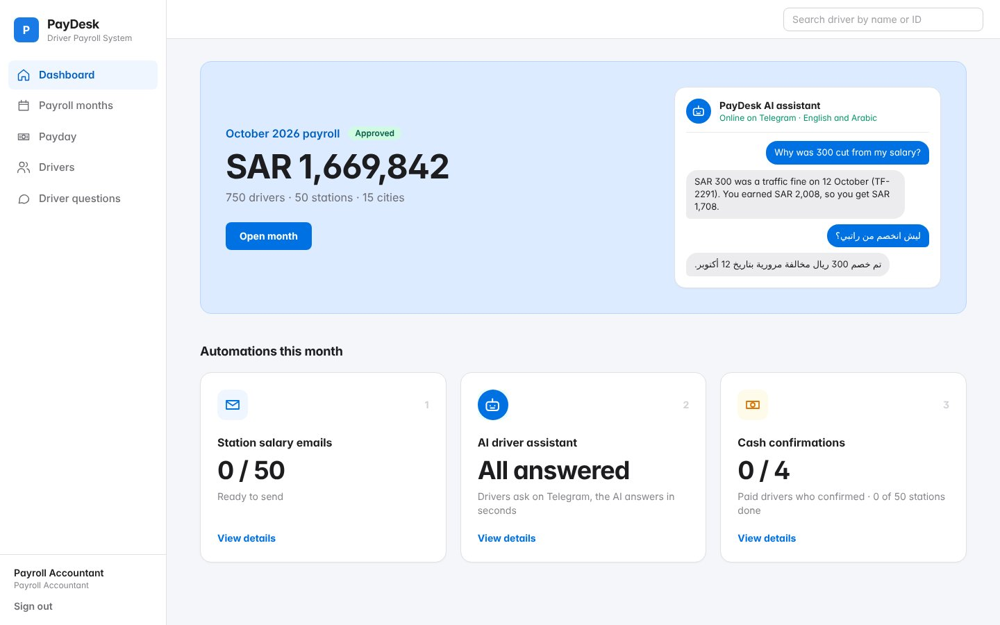
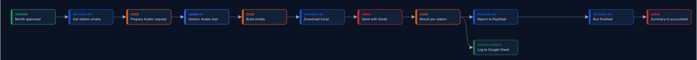
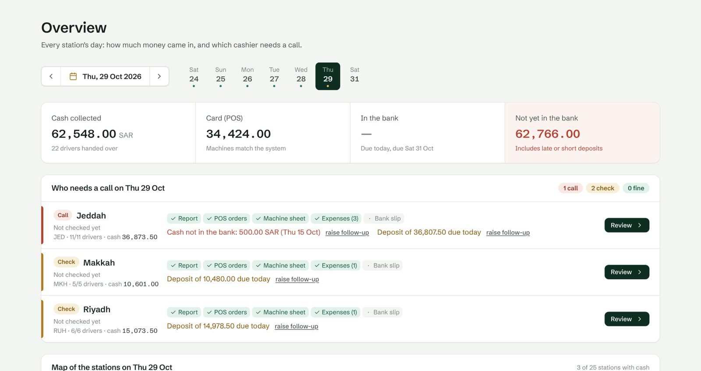

I work in finance at iMile, a delivery company in Riyadh, where I settle 2,000 to 3,000 cash-on-delivery orders every day and turn the numbers into reports for management.
Every day I saw people doing the same work by hand: sending the same emails, answering the same questions, checking the same numbers. So I started building AI tools that do this work automatically, so people can spend their time on work that actually needs a person.
My biggest project, PayDesk, turned a 3-hour payroll task into about 1 minute, and answers staff salary questions with AI in English and Arabic.
If a task is boring and repeated, I can automate it. Here is the kind of work I take off a team's desk:
✉️ Emails and reports that send themselves
The right report goes to the right people at the right time, without anyone pressing a button.
💬 AI assistants for staff or customers
A chat assistant on Telegram or WhatsApp that answers questions from your own company data, in English and Arabic.
📄 AI that reads documents
Invoices, receipts and bank slips are read by AI, checked for mistakes, and entered into your system for you.
📊 Clear dashboards for managers
Power BI dashboards that show the numbers a manager needs in one look.
PayDesk: payroll that runs itself
Drivers kept asking me "Why was my salary cut?" and I had no answer. Salary emails to 50 stations took 2 to 3 hours by hand.
A system where the computer does the payroll work: it sends the emails, explains every salary with AI, and checks cash was really paid.
3 hours of work now takes about 1 minute. Staff get answers in seconds, and paper signature sheets are gone.

Station salary emails
All 50 stations get their salary email with Excel, in English and Arabic, in about a minute.
AI salary assistant
Staff ask on Telegram why their salary changed, and AI explains it line by line.
Cash confirmations
Each cash payment is confirmed on Telegram. A wrong amount alerts finance in minutes.
How PayDesk works on its own
Each box is one step the computer does by itself, and the arrows show the order. For example: the manager approves the month → the system gets the salary list → AI writes the Arabic text → 50 emails go out → everything is logged.

Invoice & Payment Autopilot ↗
Problem: checking supplier invoices by hand is slow and mistakes are easy to miss. What it does: AI reads each invoice from email, checks VAT, duplicates and the ZATCA QR code, asks the right manager to approve, and plans the weekly payments.

CODesk: cash and COD supervision ↗
Problem: a supervisor has to check cash from many stations in many files. What it does: one screen shows every station's cash and deposits, AI reads bank slips and receipts, and a daily report goes to the manager.
Power BI dashboards
Problem: managers get long spreadsheets but need quick answers. What it does: clean dashboards show where the money comes from, which branches lead and how numbers change. They use real company data, so I show them in interviews.
Finance Executive · iMile Delivery Services
Settle 2,000 to 3,000 cash-on-delivery orders every day, reconcile cash and card payments with the delivery system, and build daily reports for management with Excel and Power BI. Turned the manual work in this role into my own automation projects, PayDesk and CODesk.
Game Development Intern · Smartnnovative Labs, Lahore
My first hands-on coding experience, working in a small development team.
Bachelor's in Computing (in progress) · Virtual University of Pakistan
Before this: Software Engineering at Lahore Garrison University, 2020 to 2024 (6 semesters completed). Certificates: Claude 101 (Anthropic), AI Fluency (Prism), Data Analyst Job Simulation (Deloitte).
Tools I use
Have a task that takes too long?
I'm open to AI automation, business automation and data roles in Saudi Arabia. Tell me what slows your team down.